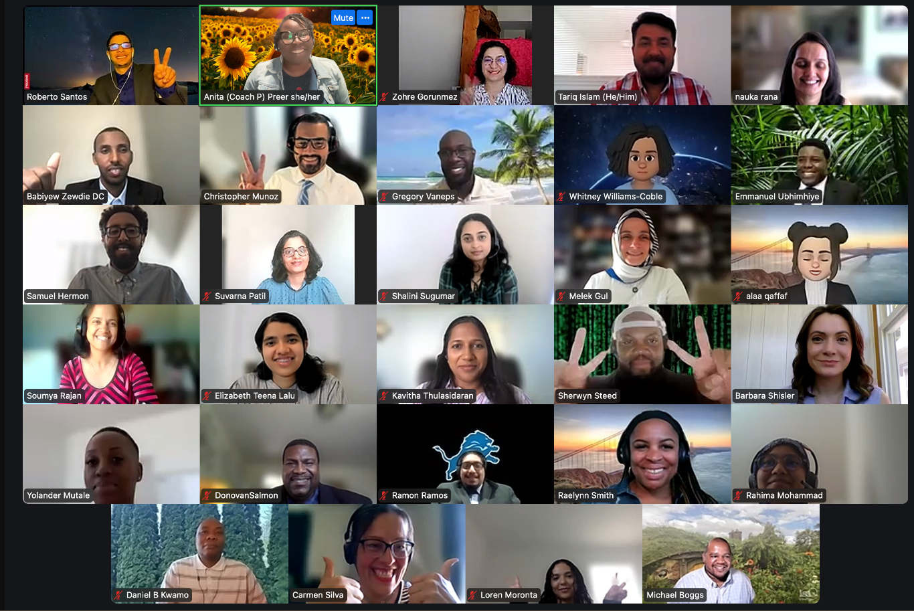

Train . Mentor . Fund
Train . Mentor . Fund
Graduating Class Cohort 9 AWS/Restart
Top Left is Roberto Santos, Cloud Solutions Architect. Roberto was the Lead AWS Technical Instructor.
Roberto is a Cloud/Computer Support Specialist equipped with a combination of technical support knowledge,
excellent troubleshooting skills, and customer service abilities that transferred to his natural personal ease
when relating to the adult learning environment. Michael Boggs, Technical Director
bottom row-4th from the left.
The Visionaries - 5 Professionals and graduates of Per Scholas are Donovan Salmon [2nd column-5th from top], Demarco Siler, Elizabeth Teena Lalu [2nd column-4th from top], Emmanuel Ubhimhiye [5th column-2nd from top], and Babiyew Zewdie [1st column-2nd from top].